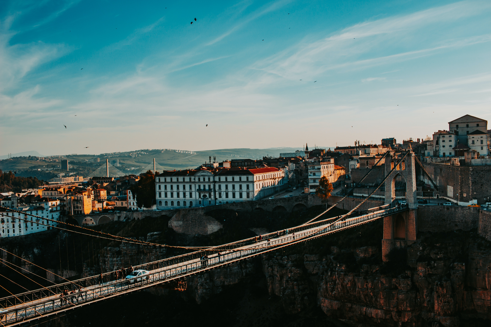

Oran
Oran is a vibrant coastal city in Algeria that offers visitors a mix of North African and Mediterranean cultures. Known for its lively music scene, stunning architecture, and delicious cuisine, Oran is a must-visit destination for travelers looking to explore the best of Algeria.One of the main attractions in Oran is the Santa Cruz Fortress, a historic citadel that offers sweeping views of the city and the Mediterranean Sea. Another must-see site is the Great Mosque of Oran, a beautiful example of Islamic architecture that dates back to the 18th century.Overall, Oran is a vibrant and welcoming destination that offers something for everyone, from history and culture to food and music. Whether you're interested in exploring the city's rich heritage or simply relaxing on its beautiful beaches, Oran is a destination that should not be missed.
algiers
Algiers is the capital and largest city of Algeria, situated on the Mediterranean coast. With a rich and diverse history spanning over 2,000 years, Algiers boasts a vibrant mix of Arabic, French, and Berber cultures. Visitors can explore the narrow streets of the Casbah, a UNESCO World Heritage Site filled with mosques, palaces, and traditional markets. The city is also home to a number of museums and galleries, showcasing the art, history, and culture of Algeria. With its sunny beaches, bustling cafes, and lively nightlife, Algiers offers something for everyone. Whether you're interested in history, culture, or just soaking up the Mediterranean sun, Algiers is a must-visit destination in Algeria.

constantine
Constantine is a city in northeastern Algeria, known as the "City of Bridges" due to the many bridges spanning the Rhumel River that flows through the city. With its stunning natural beauty, rich history, and cultural heritage, Constantine is a popular destination for visitors to Algeria. The city is home to a number of historical landmarks, including the iconic Sidi M'Cid Bridge and the impressive Palace of Ahmed Bey. Visitors can also explore the old town, with its traditional markets and winding streets, or take a cable car ride for stunning views of the city and surrounding countryside. With its vibrant mix of Berber, Arabic, and French cultures, Constantine offers a unique and unforgettable experience for all who visit.

tamanrasset
Tamanrasset is a remote and rugged city located in the southern part of Algeria, known as the "Gateway to the Sahara". With its stunning desert landscapes, vibrant markets, and rich cultural heritage, Tamanrasset is a unique and fascinating destination for visitors. The city is home to a number of historical sites, including the famous Ghardaia Mosque and the ancient Ksar of Tamentit. Visitors can also explore the vibrant local markets, where they can find traditional crafts, jewelry, and spices. Tamanrasset is also a popular starting point for desert expeditions and camel treks, allowing visitors to experience the breathtaking beauty of the Sahara firsthand. With its unique mix of Berber, Tuareg, and Arabic cultures, Tamanrasset is a must-visit destination for anyone seeking an unforgettable adventure in Algeria.
batna
Batna is a historic city in northeastern Algeria, known for its fascinating mix of Roman, Berber, and Arabic cultures. The city is surrounded by stunning natural beauty, including the Atlas Mountains and the famous Tassili N'Ajjer National Park. Visitors to Batna can explore the city's rich history by visiting the Timgad archaeological site, a UNESCO World Heritage Site that contains the ruins of an ancient Roman city. The city is also home to a number of museums and galleries, showcasing the art and history of Algeria. With its bustling markets, lively cafes, and friendly locals, Batna offers a warm and welcoming atmosphere to all who visit. Whether you're interested in history, culture, or nature, Batna is a must-visit destination in Algeria.
Béjaïa
Béjaïa is a vibrant coastal city located in northern Algeria, known for its stunning natural beauty, rich cultural heritage, and bustling port. Visitors to Béjaïa can explore the city's history by visiting the Kasbah, a fortified citadel that dates back to the 11th century, or the Roman ruins of Saldae. The city is also home to a number of museums and galleries, showcasing the art, history, and culture of Algeria. With its sunny beaches, crystal-clear waters, and lively cafes and restaurants, Béjaïa offers a welcoming atmosphere to all who visit. The city is also a popular destination for outdoor enthusiasts, with hiking trails and water sports available for those looking to explore the stunning coastline and surrounding mountains. Whether you're interested in history, culture, or just relaxing by the sea, Béjaïa is a must-visit destination in Algeria.